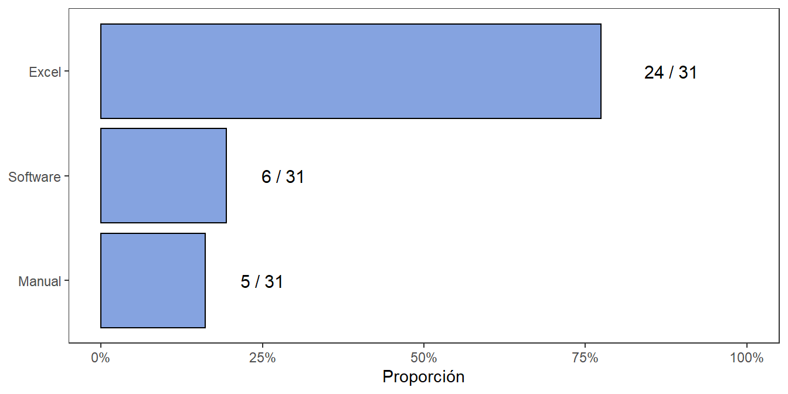
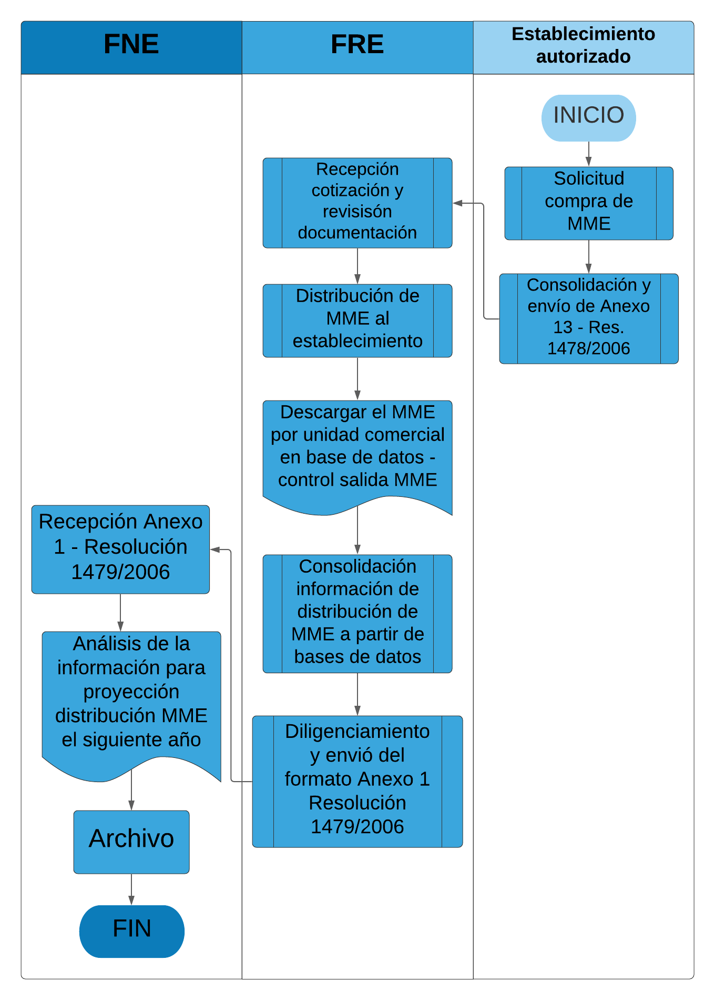
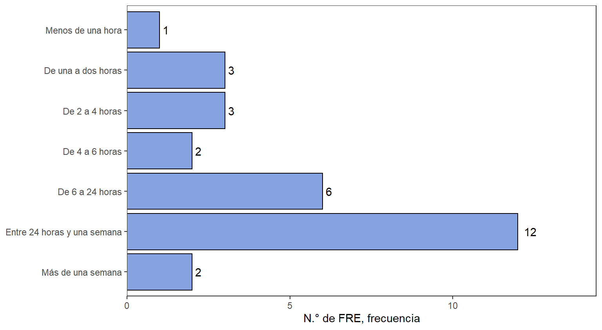
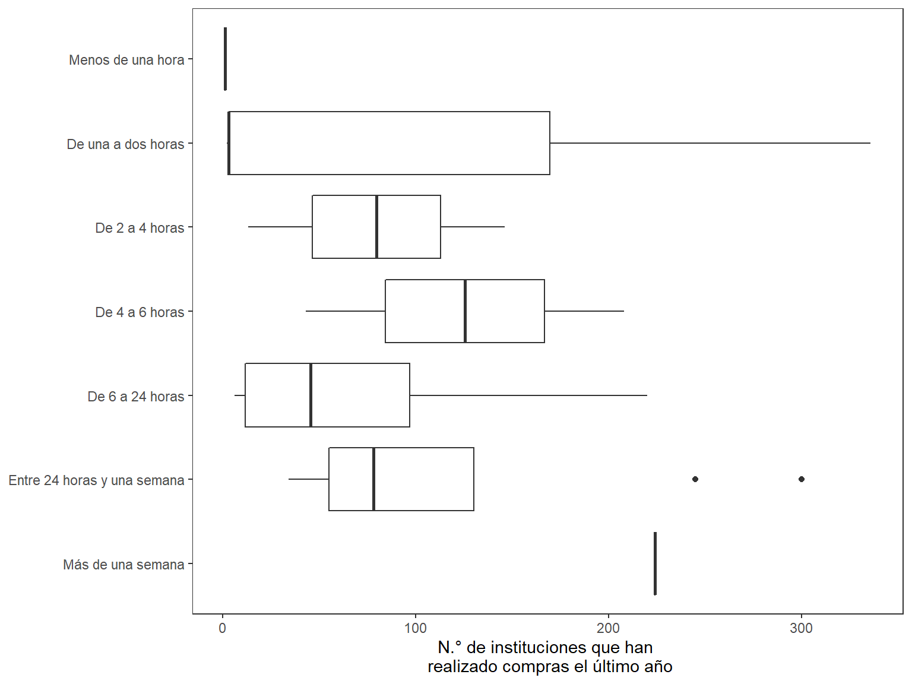
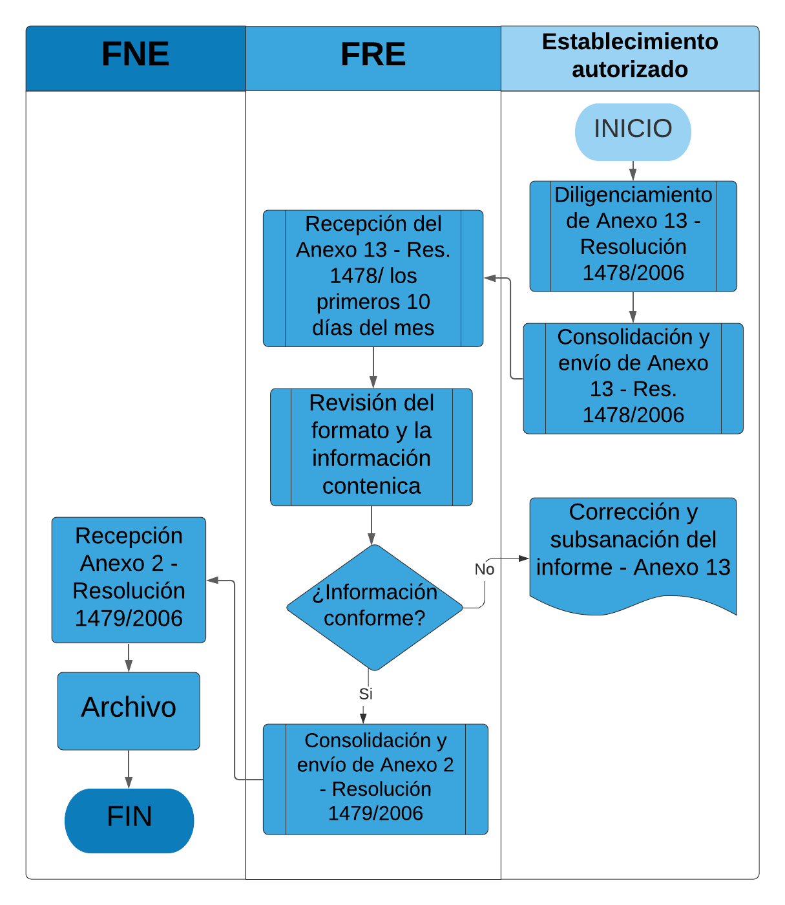
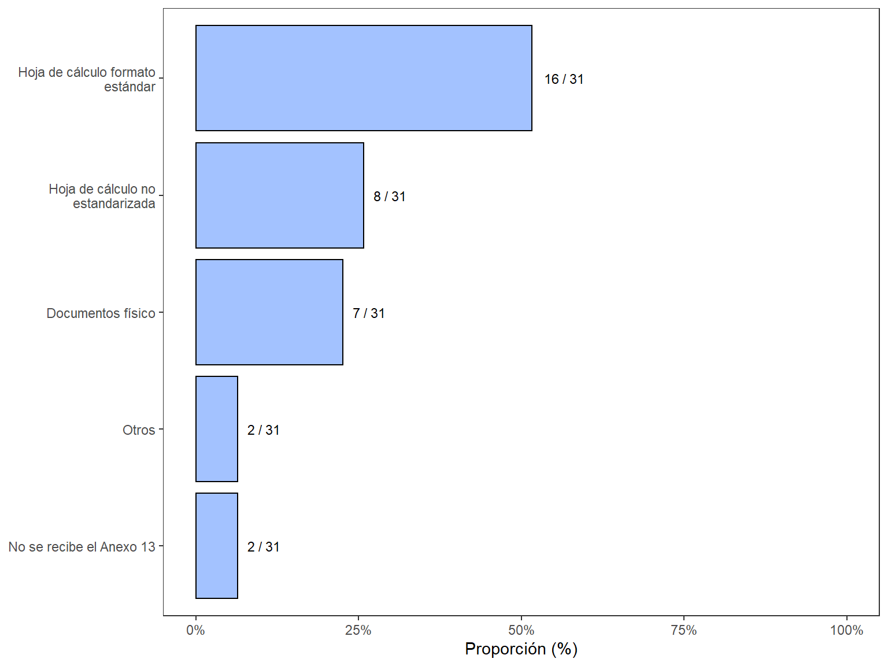
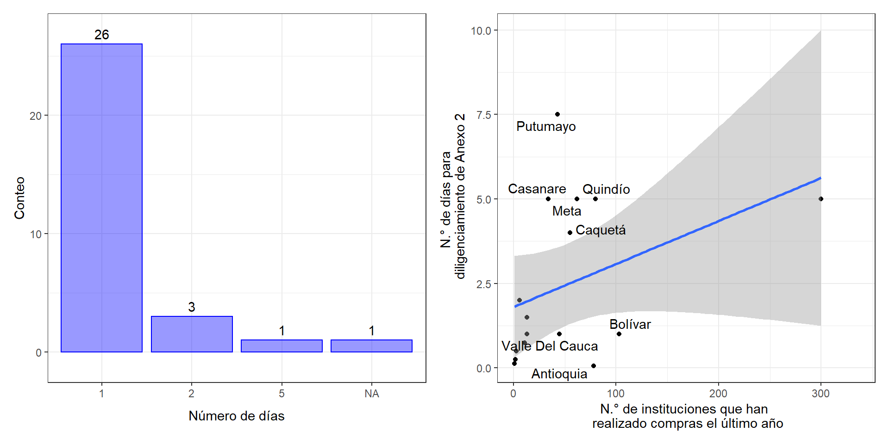
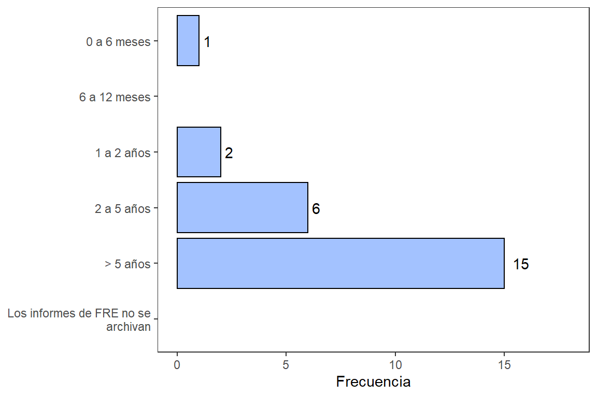

8.1 Diligenciamiento de anexos
Para el correcto diligenciamiento de estos anexos o informes que deben presentarse ante el FNE, los FRE departamentales suelen determinar esta consolidación de información como un proceso interno en la entidad territorial, cuya prioridad se concede de acuerdo con la disponibilidad de personal de apoyo que tiene el FRE. Frecuentemente, la misma persona que diligencia el Anexo 1 “informe mensual sobre la distribución de medicamentos monopolio del Estado”, también diligencia el Anexo 2 “informe mensual sobre consumo de medicamentos monopolio del Estado”. No obstante, en algunos territorios, estos anexos son consolidados por dos personas diferentes, debido a la cantidad de instituciones inscritas en el departamento.
Incluso en algunos FRE departamentales, este proceso de diligenciamiento del Anexo 1 y Anexo 2 se encuentra desatendido, debido al limitado recurso humano que tiene vinculado el FRE. En otros casos, el personal del FRE se olvida de consolidar y enviar el Anexo 2 y solo se preocupan por enviar al FNE el Anexo 1 “informe mensual sobre la distribución de medicamentos monopolio del Estado”, confiriendo mayor relevancia a este informe. De cualquier manera, los inconvenientes en el cumplimiento del envío de estos Anexos, radica en el limitado número de personas vinculadas al FRE.
Por otra parte, las herramientas tecnológicas son un elemento primordial para recibir, consolidar y almacenar los Anexos de la Resolución 1479 de 2006. En la Figura 8.1 se tiene una descripción de las herramientas utilizadas para el diligenciamiento de los Anexos 1 y 2 de la Resolución 1479 de 2006, respectivamente1. La mayoría de los FRE utilizan hojas de cálculo para el diligenciamiento de estos informes, teniendo en cuenta que la información puede provenir de documentos físicos.
Figura 8.1: Herramientas en el diligenciamiento del Anexo 1 de la Resolución 1479 de 2006
Sobre la consolidación de estos informes que aparecen en la Resolución 1479 de 20061, el Grupo de Regionalización que hace parte del Grupo Interno de Trabajo de Medicamentos Monopolio del Estado (GIT-ME) del FNE, se encarga de la recepción, consolidación y verificación de estos informes. Por lo tanto, se ha definido una hoja estandarizada de Excel, cuyo formato fue compartido a todos los FRE departamentales para la consolidación del consumo y distribución de los MME. Por esta misma razón, hay uniformidad a nivel nacional, en la forma como se diligencian y presentan estos anexos de la Resolución 1479 de 2006. Adicionalmente, el Grupo de Regionalización lleva el control sobre las cantidades de consumo y distribución que presentan todos los departamentos.
8.1.1 Diligenciamiento de Anexo 1
Para la consolidación de la información del informe mensual sobre la distribución de medicamentos monopolio del Estado, concerniente al Anexo 1 de la Resolución 1479 de 20061, se observa una tendencia en este proceso a nivel nacional, por parte de los FRE departamentales. Generalmente, esta información de distribución es obtenida a partir de la base de datos o herramienta que emplea el personal del FRE para hacer el control de salida de los MME. Así se lleve esta base de datos en medios físicos y/o medios digitales, el personal del FRE se apoya en este recurso para la consolidación de la información del Anexo 1 de la Resolución 1479 de 20061.
Algunos FRE departamentales aún mantienen este control por medio de libro físico y otros FRE lo realizan en una hoja de cálculo Excel. No obstante, sea cual sea esta herramienta en el territorio, el personal del FRE presta mucha atención en el diligenciamiento de este formato, con el fin de llevar el control adecuado referente a la distribución de MME. En este orden de ideas, el personal del FRE, finalizando cada mes, consolida esta información de distribución de MME en el territorio, a partir de la base de datos referente al control de salida de MME.
La información es dispuesta en la hoja estandarizada de Excel del Anexo 1 de la Resolución 1479 de 2006, discriminada por medicamento y unidad comercial de cada MME. Después, los primeros 10 días del mes es enviada al FNE. Posteriormente, estos datos de distribución de Medicamentos Monopolio del Estado a nivel nacional, son analizados en el FNE, con el fin de proyectar la distribución de MME el siguiente año. Este análisis nacional es tenido en cuenta para la importación de materia prima y fabricación de estos medicamentos.
Por esta razón, debe resaltarse la gran importancia y calidad de la información contenida en los Anexos 1 de la Resolución 1479 de 2006 en cada departamento del país. La Figura 8.2 muestra el proceso de consolidación del Anexo 1 de la Resolución 1479 de 2006.
Figura 8.2: Proceso de consolidación de Anexo 1 de la Resolución 1479 de 2006
Por otro lado, en la Figura 8.1 se tiene una descripción de las herramientas utilizadas particularmente para el diligenciamiento del Anexo 1 de la Resolución 1479 de 2006. A partir de la figura se observa que la mayoría de los FRE departamentales se apoyan en hojas de cálculo de Excel para consolidar la información, brindando más precisión en los datos de distribución de MME en su territorio. Por otro lado, se observan tres FRE departamentales que utilizan herramientas digitales y manuales para el diligenciamiento de este informe. Mientras que sólo dos FRE en todo el país, sustentan esta actividad mediante procedimientos manuales (como lo son Guainía y La Guajira).
Algunos FRE como Antioquia, Bolívar, Córdoba, Cesar, Quindío y Valle del Cauca tienen plataformas desarrolladas dentro de la gobernación que son utilizadas para el diligenciamiento del Anexo 1, cuya condición favorece en la efectividad del proceso y la continuidad que recibe esta actividad al interior del FRE. Adicionalmente, esta ventaja informática brinda mayor precisión en el manejo de datos de la distribución de MME en estos departamentos.
El tiempo de consolidación del informe mensual sobre la distribución de MME, referente al Anexo 1 de la Resolución 1479 de 2006 es una variable importante para determinar la capacidad operativa en este proceso interno del FRE. A partir de la Figura 8.3, se observa una tendencia en el tiempo de consolidación de la información de distribución de medicamentos.
Como se discutió anteriormente, el grupo de Regionalización, encargado de la consolidación y verificación de estos informes, definió una hoja estandarizada de Excel para la presentación del Anexo 1. Por esta razón, la Figura 8.3 resalta una tendencia en el tiempo de preparación del informe mensual sobre la distribución de MME (Anexo 1), a nivel nacional.
Figura 8.3: Tiempo en la consolidación del Anexo 1 de la Resolución 1479 de 2006
La gran mayoría de FRE departamentales manifestaron un tiempo mayor en la consolidación de la información del Anexo 1, respecto al tiempo de consolidación del Anexo 2, considerando la Figura 8.3 y Figura 8.5. No obstante, esta percepción del tiempo que tarda el personal del FRE para la consolidación del Anexo 1, incluye igualmente la consolidación del Anexo 2. Así las cosas, la Figura 8.3 muestra un tiempo extremadamente largo para la consolidación de ambos informes, cuya extensa duración puede atribuirse a la forma como reciben los informes de las instituciones inscritas, indispensable para el primer paso del diligenciamiento del Anexo 2.
Algunas instituciones entregan este informe de manera electrónica al FRE, mientras otros aportan este informe en medio físico. Esta particularidad influye en el tiempo de consolidación, dado que, si estos son allegados de forma presencial o física, se necesita una transcripción, que podría traducirse en un proceso engorroso que toma mucho más tiempo. Esta razón puede ser causa del retraso en el envío de los informes mensuales, referente al Anexo 2 de la Resolución 1479 de 2006. Esta problemática puede evidenciarse mucho más, en las regiones con elevada cantidad de instituciones inscritas, considerando la cantidad de personal vinculado al FRE, encargado de este proceso.
En la Figura 8.4 se muestra una comparación entre los tiempos de diligenciamiento del Anexo 1 y el número de instituciones en el departamento. De acuerdo a esta comparación no se tiene una relación clara entre el tiempo que toma cumplir con este requerimiento y el número de instituciones que realizan compras en el departamentos.
Figura 8.4: Tiempo en la consolidación del Anexo 1 de la Resolución 1479 de 2006 vs N° de instituciones que realizan compra en un año
8.1.2 Diligenciamiento de Anexo 2
Para la consolidación de la información del informe mensual sobre consumo de medicamentos monopolio del Estado, referente al Anexo 2 de la Resolución 1479 de 2006, se observa una uniformidad en este proceso a nivel nacional por parte de los FRE departamentales. Inicialmente, las instituciones inscritas en cada territorio, envían el “informe de consumo de medicamento de control especial de los establecimientos minoristas” presente en el Anexo 13 de la Resolución 1478 de 2006, cuya información involucra el consumo de MCE, resaltando principalmente el consumo de MME. Posteriormente, el establecimiento autorizado debe consolidar y enviar este formato estándar al FRE respectivo en cada territorio.
Luego, el ente territorial recibe todos los informes y procede a revisar cada uno de estos, en función de forma y validación de la información contenida. Si algún informe no es conforme, el personal del FRE devuelve dicho informe para su posterior subsanación por parte de la institución. Una vez sean conformes todos los informes para el FRE departamental, el personal consolida la información aportada por todo el departamento, referente al consumo de MME, en el formato estándar del Anexo 2 de la Resolución 1479 de 2006. Por último, este formato Anexo 2 es enviado al Grupo de Regionalización del FNE, donde se archivan todos los Informes mensuales departamentales.
La Figura 8.5 muestra el proceso de consolidación del Anexo 2 de la Resolución 1479 de 2006.
Figura 8.5: Proceso de consolidación de Anexo 2 de la Resolución 1479 de 2006
En contraste a la manera cómo los FRE realizan la consolidación del Anexo 1, hay una diferencia en la consolidación del Anexo 2, sobre la forma en la que algunos FRE reciben los Anexos 13 que es entregado al FRE por parte de los inscritos (Anexo de consumo por institución inscrita), con los cuales se alimenta el Anexo 2 de consumo departamental. La Figura 8.3 permite ver un tiempo relativamente corto en la consolidación de la información del Anexo 1, respecto al tiempo de consolidación del Anexo 2. La recepción de los informes de consumo de medicamento de control especial de cada establecimiento autorizado (Anexo 13 de la Resolución 1478 de 2006), es el insumo primordial para diligenciar los datos del Anexo 2 de la Resolución 1479 de 20061.
Algunas instituciones entregan este informe al FRE, de manera electrónica, mientras otros aportan este informe en medios físicos. Esta particularidad influye en el tiempo de consolidación, dado que, si estos son allegados de forma presencial o física, se necesita una transcripción, que podría traducirse en un proceso engorroso que toma mucho más tiempo. Esta razón puede ser causa del retraso en el envío de los informes mensuales, referente al Anexo 2 de la Resolución 1479 de 20061. Esta problemática puede evidenciarse mucho más, en las regiones con elevada cantidad de instituciones inscritas, considerando la cantidad de personal vinculado al FRE, encargado de este proceso interno.
La Figura 8.6 muestra los diferentes tipos de documentos que reciben los FRE, por parte de las instituciones autorizadas en el territorio, referente al Anexo 13 de la Resolución 1478 de 20064. Esto muestra diversas formas en que el FRE recibe este informe y la condición de transcribir toda esta información departamental para que quede ajustada en la hoja estandarizada de Excel.
Figura 8.6: Medio para consolidación de Anexo 13 de la Resolución 1478 de 2006
La Figura 8.7 muestra los recursos utilizados por los FRE para el diligenciamiento del Anexo 2 en los departamentos. El diligenciamiento del Anexo 2 de la Resolución 1479 de 20061 suele ser llevado a cabo por una persona en la mayoría de FRE (n = 26), pero en algunos FRE reportan que pueden llegar a necesitar 2 personas (p.ej. Tolima, Boyacá, y Guaviare), sólo el FRE de Cauca reporta que se requiere a todo el equipo para el diligenciamiento del informe.
Figura 8.7: Recursos en la consolidación del Anexo 2 de la Resolución 1479 de 2006. (A) N.° de personas involucradas, (B) Comparación de tiempo de diligenciamiento frente a N.° de instituciones
En el panel B de la Figura 8.7 se muestra una comparación entre el tiempo de diligenciamiento del Anexo 2 y el número de inscritos en el departamento. Se tienen casos como Putumayo y Casanare que tienen tiempos de diligenciamiento mayores a lo esperado de acuerdo al número de instituciones. Así como el caso de Antioquia que reporta un tiempo muy rápido de diligenciamiento pese a que cuenta con muchos inscritos:
Un regente realiza el proceso en aproximadamente 30 minutos
Adicionalmente, la base de datos entregada por el grupo de Regionalización, referente a los informes enviados por todos los FRE, muestra que al menos 10 departamentos no han entregado un solo informe de consumo para lo corrido del año 2021. Además, se evidencia un rezago de aproximadamente dos meses, en la entrega de este informe, incluso para los FRE que tienen mayor cantidad de informes entregados.
8.1.3 Archivo del Anexo 13 de la Resolución 1478 de 2006
En la Figura 8.8 se muestra que la práctica más común es realizar el archivo de los Anexo 13 de la Resolución 1479 de 2006 por al menos 5 años, aunque 6 FRE realizan este archivo de informes en períodos de tiempo entre 2 a 5 años.
Figura 8.8: Tiempo de archivo de Anexo 13 de la Resolución 1478 de 2006
